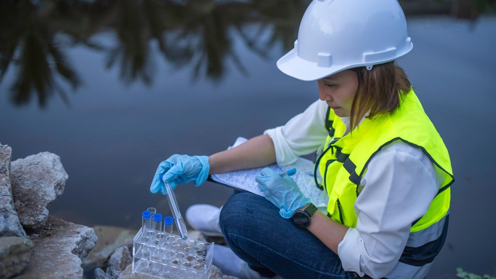

Launch Your Future as an Environmental Engineer
Tackle pollution and build a cleaner, greener world!
Pathway Snapshot
High School Courses | College Majors | Career Roles |
Environmental Science | Environmental Engineering | Environmental Engineer |
Biology | Civil Engineering | Water Resources Engineer |
Chemistry | Chemical Engineering | Sustainability Engineer |
Physics | Environmental Science | Air Quality Engineer |
Algebra & Calculus | Engineering Technology | Climate & Resilience Engineer |
Women Who Lead the Way
Kimberly Jones
Environmental Engineer & Professor, Howard University
Photo Credit: cresp
“Engineering lets me turn data into solutions that make communities healthier and more resilient.”
Dr. Jones is a nationally recognized environmental engineer whose research focuses on water quality, infrastructure equity, and environmental justice—helping ensure clean water access for underserved communities.
Day in the Life
Daily Tasks | Tools & Technologies |
Test water, air, or soil samples | GIS mapping software |
Design pollution control systems | Water quality sensors |
Analyze environmental data | MATLAB, Excel, Python |
Collaborate with scientists & city planners | CAD design tools |
Monitor environmental regulations | Data dashboards & modeling tools |
Mini-Activity: Try This!
Be a Water Quality Detective
Collect a water sample from a local stream or tap. Research what pH, turbidity, and contaminants mean, then compare your findings with EPA safe-water standards. What improvements would you suggest?
Careers & Resources
Degree Program Finder:
- ABET-accredited Environmental Engineering programs
Scholarships:
- Society of Women Engineers (SWE)
- EPA environmental scholarships
Summer Camps & Programs:
- Engineering summer academies
- Environmental science camps
Explore More:
- O*NET Environmental Engineer profile
- Roadtrip Nation career stories
You Belong Here
If you care about the environment, enjoy science and problem-solving, and want a career that truly helps people and the planet, Environmental Engineering could be your path. You don’t have to choose between caring and building—you can do both.
